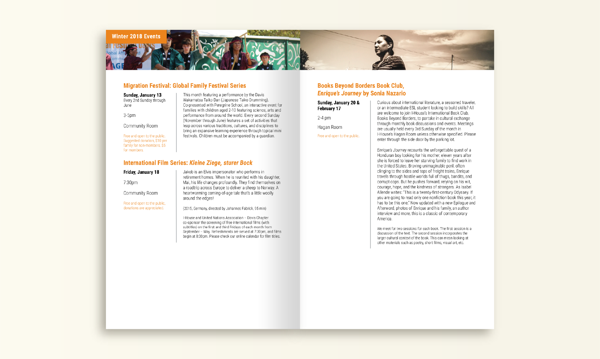
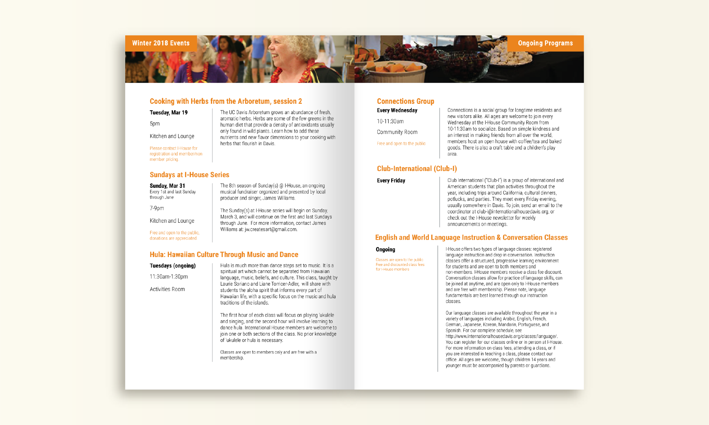
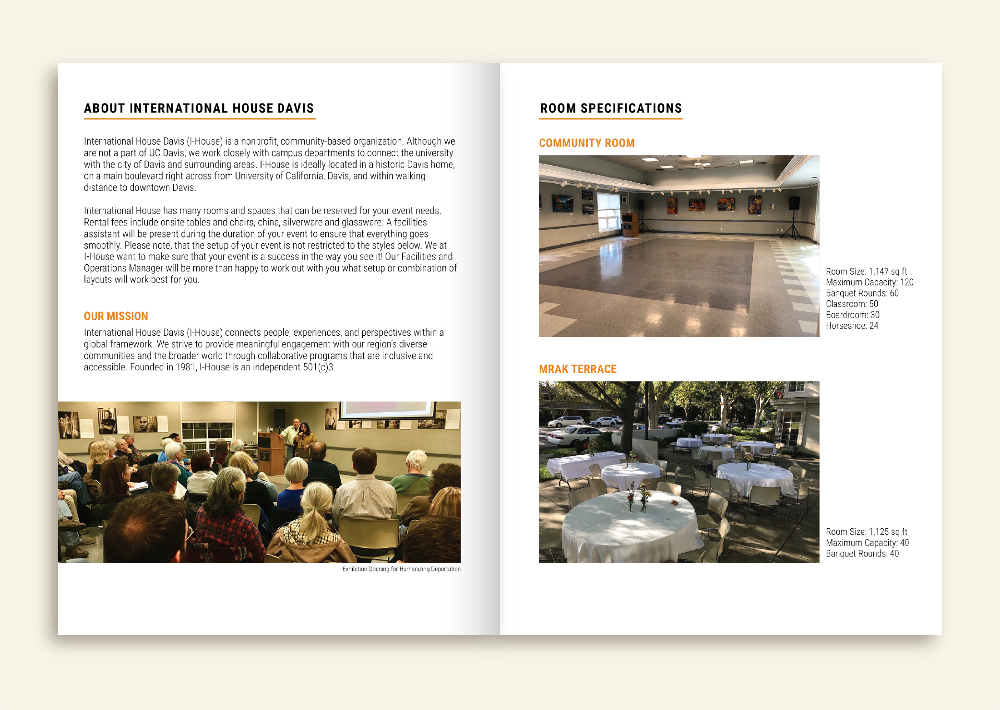
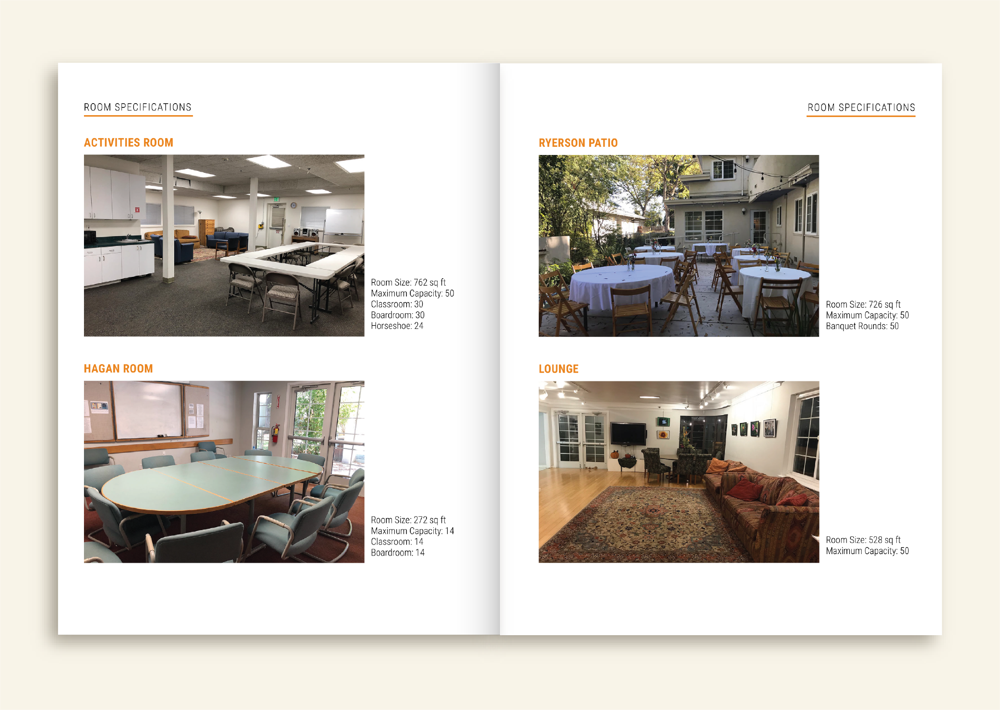

Capstone Project
Under the Same Sky
graphic designer & illustrator


For this project, I was assigned to create an interactive platform that revolved around the theme of Borders. Inspired by artist JessXSnow's work "Migration is Natural," I chose to create a site that centers around three different stories of immigrant women of color using motifs of birds, the night sky, and constellations. For this project, I focused on the emotional impact of narrative and storytelling, while also implementing user interactivity in order to encourage them to learn more about the issues presented here. See the full project here
For this project, I was responsible for creating a quad-fold pamphlet that describes the physical space of the UC Davis Women's Resources & Research Center and the resources that they offer to both on and off-campus communities. I conducted research and interviews with staff and community members of the WRRC to create a pamphlet that is clear and cohesive, as well as representative of the WRRC's brand and identity.
For this project, I worked with the non-profit organization, International House, Davis and Taller Arte Del Nuevo Amanecer (TANA), to create an exhibition poster for their "Humanizing Deporation" showcase, where they exhibited different works of art centered around the issues related to deportation in the U.S. Using the screen print images provided by TANA paired with imagery of the sky and birds, I showcased the themes of the exhibition to represent the ongoing struggles of migrants and their goals of liberation, freedom, and safety.
For my UI/UX design class, I developed a comprehensive prototype of an app called "SafeSpace," an app that would serve as a deescalation resource for those experiencing mental health crises. After conducting research about this issue, I found that individuals with untreated mental illnesses were 16 times more likely to be shot by police than those without any, which is an alarming rate. For this project, I decided to design and prototype an app that would help prevent police encounters for those experiencing crises but also be able to gain help from a network of crisis support counselors. View the prototype here.
The UC Davis Women's Resources and Research Center is responsible for planning and hosting several awareness months/days for the campus community in order to raise awareness of issues faced by underserved communities. I have designed posters for Gender Equity Awareness Month and International Women's Day, both of which have vector illustrations that relay the theme or main speaker for each event.
For this project, I used warm colors and a vector illustrated image of Virgie Tovar, the guest speaker for this event, in order for the poster to stand out and draw people in.
The theme for this awareness month was nature, water and connectedness. In order to communicate that, I created a vector illustration of two hands holding water with foliage bordering the illustration. I used cool, pastel colors to invoke a sense of calm and peace to the viewer. In addition, I used a simple grid format with clear type hierarchy to showcase the events for that month.
These catalogs were designed for the non-profit organization International House, Davis (I-House) to include information and details about their hosted events for their members and the Davis community. The goal for this project was to create a catalog that was simple yet connected to I-House's new brand design and their tenets of community. To accomplish this, I created a cohesive grid format for their catalog that prioritized important information and included photos from previous I-House events to create a sense of family and connection.


I was responsible for the redesign of International House, Davis's business system. I worked with the previous Executive Director of I-House to create a business system that was clean, cohesive, and readable to people of all ages.
I was commissioned by International House, Davis to create a brochure with information about the services and room rentals they offered to community members. I kept the design for this brochure clean and simple, while also making sure that the overall visual identity of the design adhered to brand standards.


I was tasked with creating the program for the 2018 Southeast Asian Graduation at UC Davis, which was distributed among about 300 guests at the venue. For this design, I chose to use motifs of cherry blossoms and bright blue and gold colors to complement the event's theme and artistic vision.
I am a graphic designer and illustrator based in Redlands, California. I am a recent graduate of the University of California, Davis with a Bachelor of Arts in Design. As a designer, I believe it is crucial to create representation for diverse people and their voices and so many of my projects reflect this value. In my spare time, I like to play video games, binge watch Netflix shows, and spend time with my dogs!
I am proficient in the following:
Adobe Creative Cloud (Illustrator, Photoshop, InDesign, XD, and AfterEffects)
InVision
HTML, CSS, and Javascript
Web and mobile development and prototyping process
Print and layout design
Illustration (digital and analog)
Check out my resume